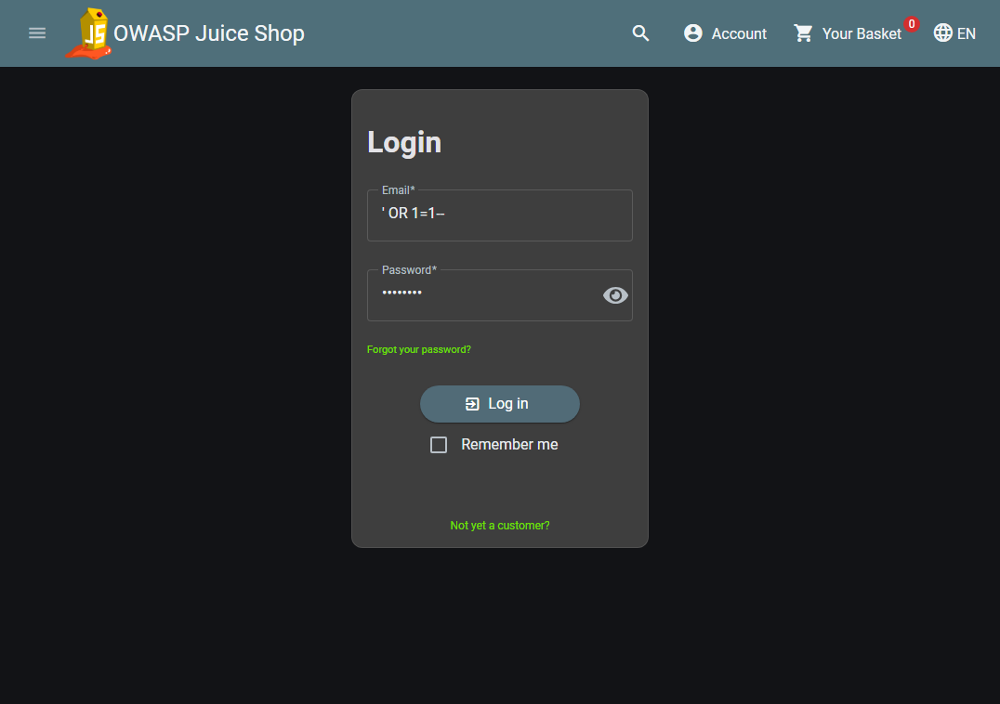
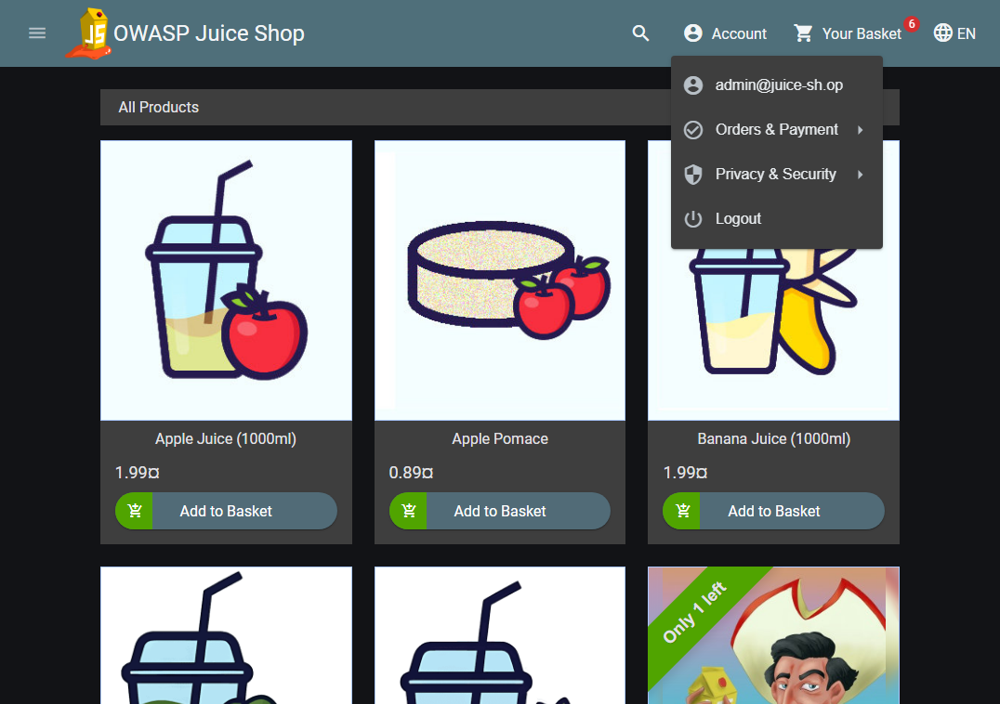
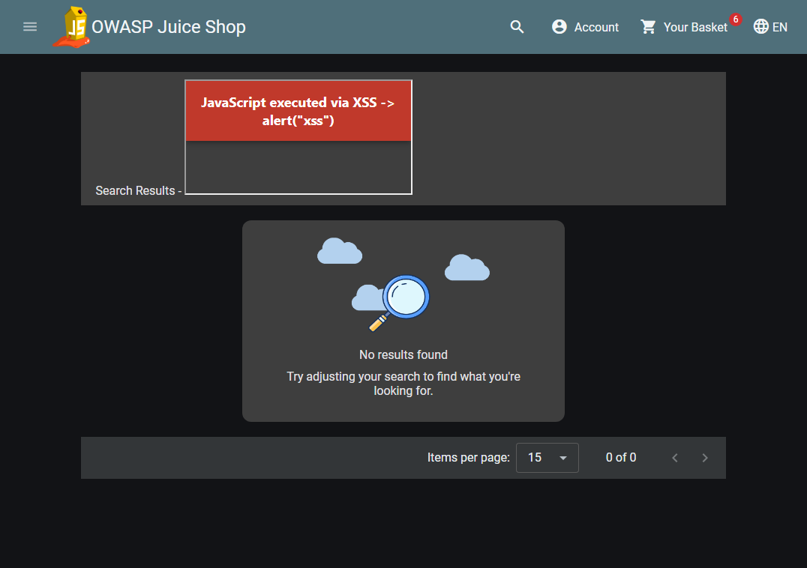

Figure 4. My login form running on localhost.
GitHub repository: https://github.com/cmangalwedhe/csce-477-hw2
To design a secure registration and login system for Juice Shop, I first ran the app
locally (v20.2.0, Docker) and exploited three real weaknesses. (1) SQL injection
bypass: typing ' OR 1=1-- in the login email with any password logged me
in as admin@juice-sh.op (Figures 1-2), because input is concatenated into the
query; the token even showed "role":"admin". (2) DOM XSS: searching
<iframe src="javascript:alert(`xss`)"> ran my own JavaScript (Figure 3).
(3) No rate limiting: 20 wrong logins all returned 401, never blocked. A secure
registration form prevents these by inserting the new user with parameterized queries,
validating and HTML-encoding every field (plus a CSP header), rate-limiting attempts, and
storing the password as a bcrypt hash, never plaintext. Below is how I would store and
check that password.
const bcrypt = require("bcryptjs");
// On registration, store only the salted hash (cost factor 12):
const hash = bcrypt.hashSync(plaintextPassword, 12);
// On login, compare without ever storing or logging plaintext:
const ok = bcrypt.compareSync(submittedPassword, hash);
Figure 1. The injection ' OR 1=1-- typed into Juice Shop's login form.

Figure 2. After submitting, I am logged in as the administrator, admin@juice-sh.op.

Figure 3. The injected iframe runs JavaScript (my alert override prints the proof banner).
The command-line checks confirmed the same two points:
$ curl -X POST .../rest/user/login -d '{"email":"' OR 1=1--","password":"x"}'
-> token decodes to: email=admin@juice-sh.op role=admin (injection logged in as admin)
$ 20 wrong admin logins in a row:
401 401 401 401 401 401 401 401 401 401 401 401 401 401 401 401 401 401 401 401
-> never a 429, so the server does not rate-limit or lock the accountI built a login form with email and password fields, styled like Juice Shop's. A
JavaScript function blocks empty submissions and checks that the email contains
@ and the password is at least 8 characters before sending. Because client
checks can be skipped, the Node/Express server runs the same validation again. Passwords
are stored as bcrypt hashes, the database lookup uses a parameterized query, every failed
login returns one generic message so accounts cannot be enumerated, and there is a limit
of 10 attempts per 15 minutes. Status text is written with textContent, not
innerHTML, so echoed input cannot run. Run it with npm install
then npm start, and open http://localhost:3000.
Figure 4. My login form running on localhost.
I tried to break my own form with admin@juice-sh.op' OR '1'='1, a plain
' OR 1=1--, and an XSS attempt <script>alert(1)</script>@x,
in both the browser and curl. None worked: every attempt returned "Invalid email or
password," with no login and no popup. The injection fails because the parameterized query
treats my input as a literal string that matches no user, and the status text uses
textContent, so the script tag shows as plain text. To confirm it was the fix
and not luck, I wrote a small script using string-concatenated SQL, and there the same
payload logged in and returned the admin row. So the fix that mattered is using
parameterized statements; if the form were vulnerable, that is what I would apply.

Figure 5. The SQL injection payload in my form's email field is rejected.
The output from my tests is below.
=== SQL injection auth-bypass attempt ===
{"success":false,"message":"Email must contain '@'."}
=== injection with valid-looking email ('admin@juice-sh.op' OR '1'='1) ===
{"success":false,"message":"Invalid email or password."}
=== XSS payload in email field ===
{"success":false,"message":"Invalid email or password."}
=== correct credentials ===
{"success":true,"message":"Login successful."}
=== vulnerable-demo.js (concatenated SQL, same payload) ===
Executed query: SELECT * FROM users WHERE email = 'admin@juice-sh.op' OR '1'='1'
Leaked row: { id: 1, email: 'admin@juice-sh.op', password_hash: 'real-hash' }
Rows returned: 1 -> AUTH BYPASS SUCCEEDED
Parameterized version with same payload -> matched NO rows (injection neutralized).